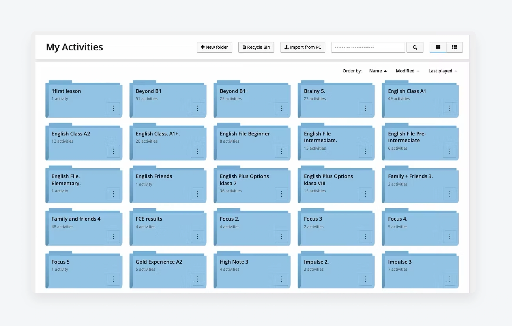
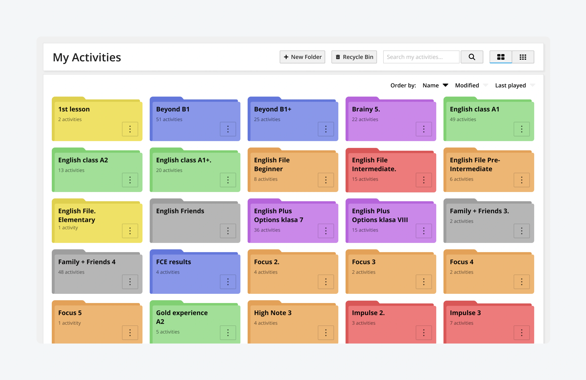
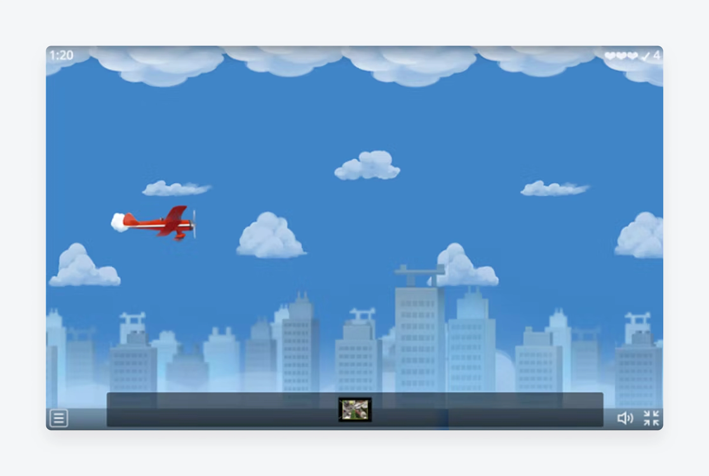
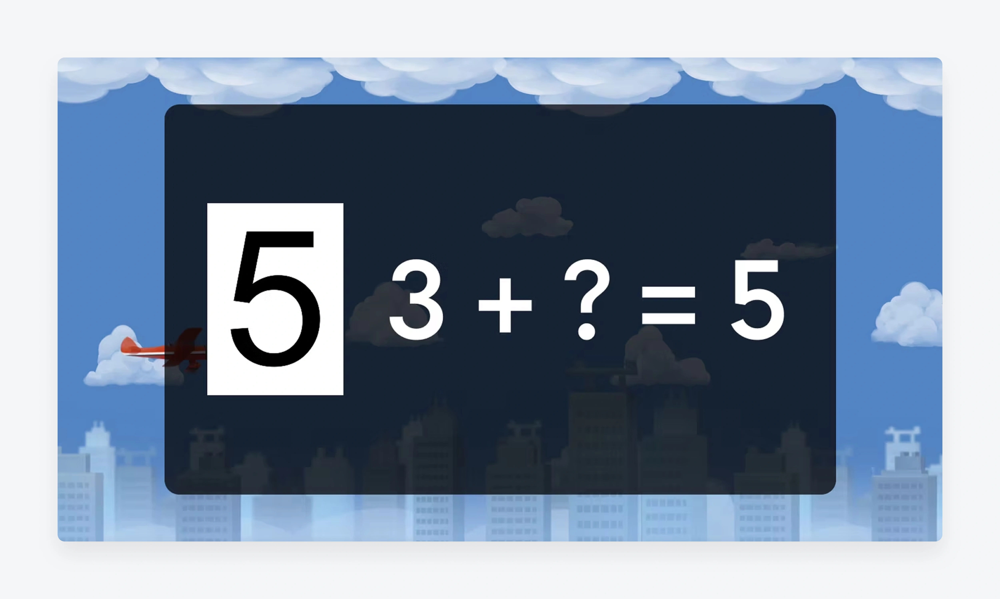
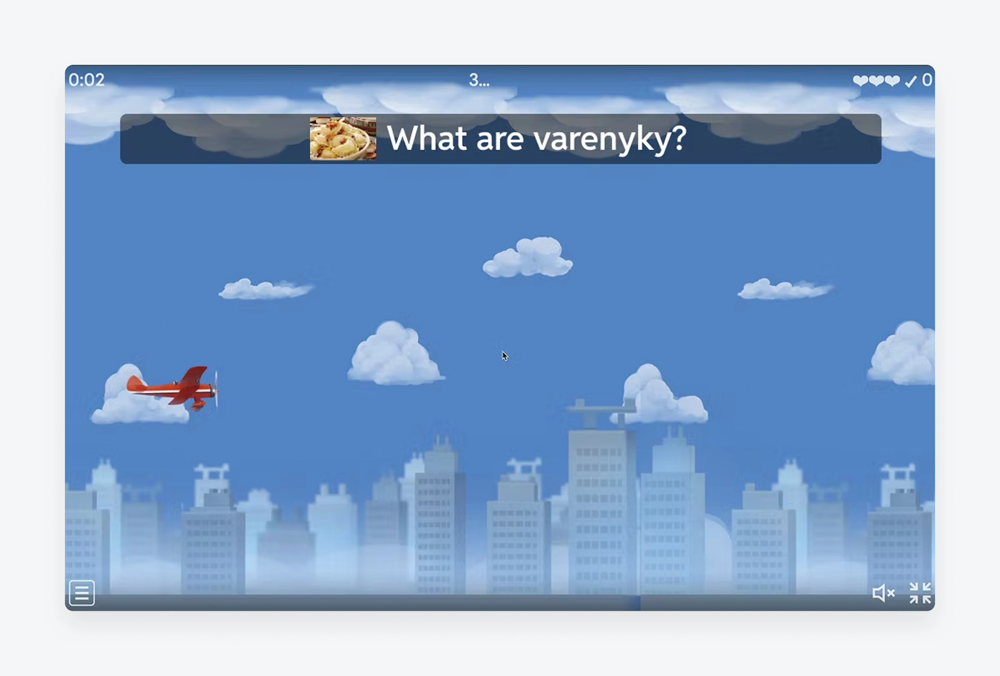
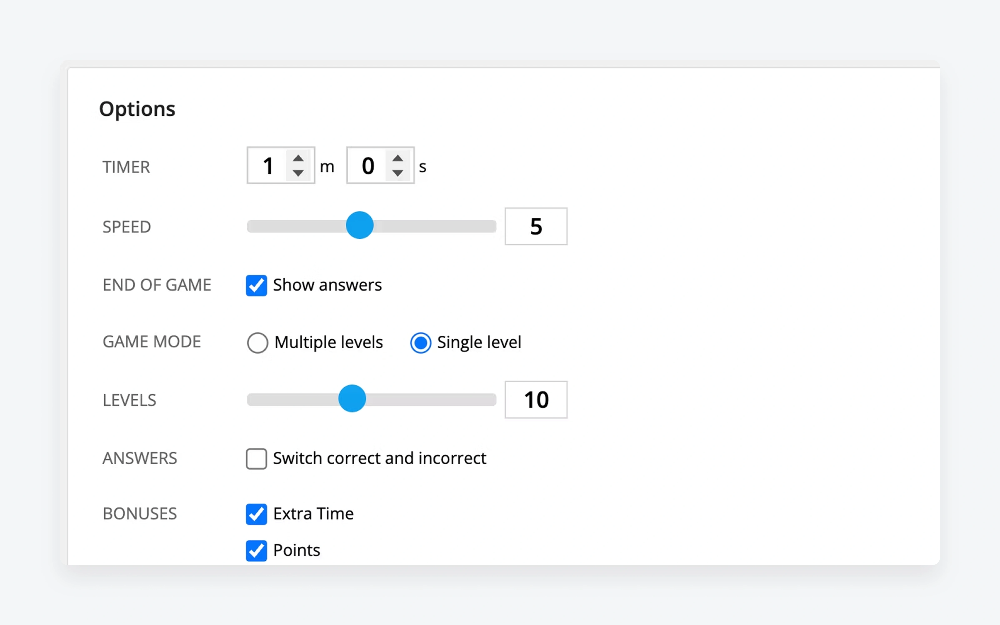
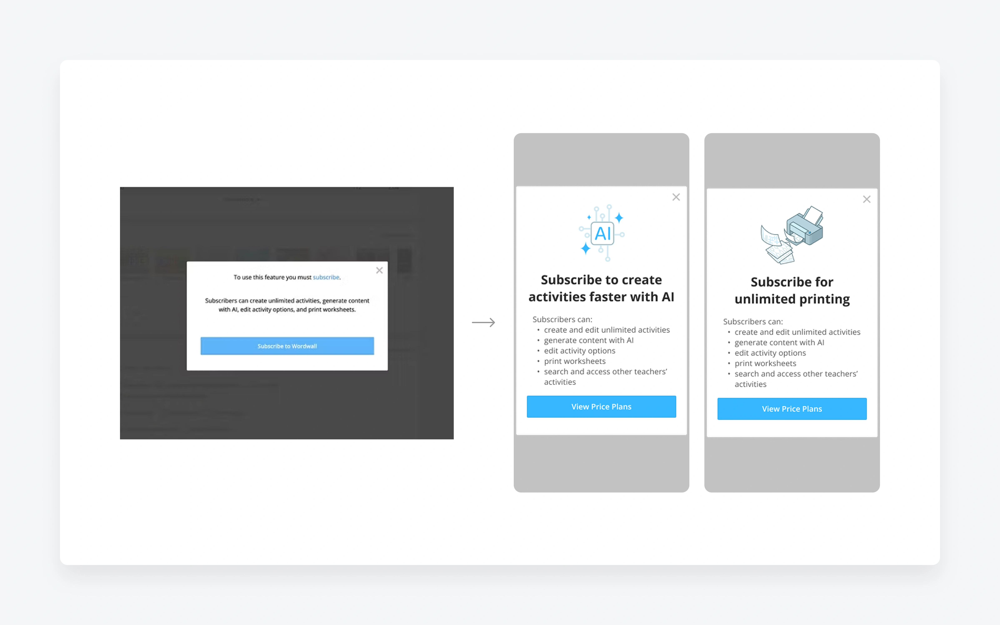

Helping teachers organize thousands of activities — and turning small interface decisions into measurable retention.
Role
Product Designer, UX Research, PM
Team
Designer + engineers
Tools
Figma · Userbrain · A/B
+27%
Standard to Pro upgrades
-6.0%
churn (96% confidence)
~50%
adoption of the new feature
The problem
Teachers manage large libraries of activities, and they couldn't find anything fast. Folders existed, but offered no way to organize them visually — so the workspace turned into an undifferentiated list the moment it grew.
58 of 253 comments asked for colour-coding.
Feedback on the “My Activity” page
Shipped
Colour-coded folders
Problem
Users couldn't locate folders quickly once their workspace grew past a handful.
Hypothesis
Teachers already colour-code printed materials in class. Letting them tag folders by colour should speed up retrieval and make the workspace feel like theirs.
Design
Colour tagging across web and mobile, shipped behind a flag, with a defined success bar set before launch: ≥10% of new folders given a non-default colour.


Result-6% churn · 96% confidence · ~50% adoption → shipped to all users
Rejected → iterated → shipped
Making the question visible (Airplane game)
Problem
In usability testing, 3 of 5 users never noticed the question at the bottom of the screen — especially on mobile, or when the question used an image.
First try
Show the question full-screen, then animate it into place. It worked for Maze Chase, so we tested it here.
Design
After the A/B test failed, the second iteration moved the question to a larger, persistent area at the top instead.



ResultOverlay broke flow in a continuous game → rejected. The follow-up (larger question on top) passed and shipped.
Rejected
Simplifying game speed (10 → 5)
Problem
Ten speed steps created choice overload — users couldn't land on the right setting, and feedback said even “1” felt too fast.
Hypothesis
Collapsing ten options into five would ease the decision and lift creation metrics on speed-dependent templates.
Design
Mapped the existing ten states onto five and tested across three templates.

ResultNo experiment reached confidence; data leaned negative → rejected. We moved on rather than force another round.
Kept live
Upgrade prompts that explain themselves
Problem
Generic “subscribe to use this feature” modals never said what the locked feature actually did, so free users saw no reason to upgrade.
Design
Custom copy and imagery per feature, behind a flag, with a ref parameter to track which feature triggered each prompt.

ResultSmall positive engagement, no harm → kept live as a base for further upgrade work.
Kept live
Social proof in Community search
Problem
The shared Community library gave users no signal of which resources others actually valued.
Hypothesis
Surfacing like-counts on home, template, and search pages would build trust and nudge engagement.
Design
Lightweight like-count display for both registered and guest users, behind a flag.
The folder result confirmed a thesis worth repeating: small, ownership-giving configuration changes move retention more reliably than big features. The next bets follow that pattern.
I'd also test minor things earlier — copy, image sizing, non-native-speaker comprehension — rather than treating them as too small to validate. Two of the wins here started as “too small to bother.”